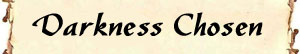
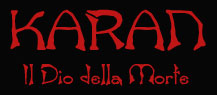
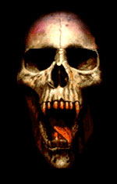
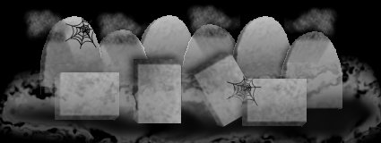
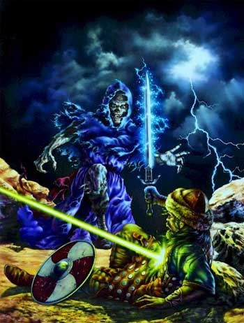
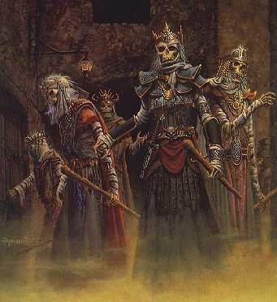
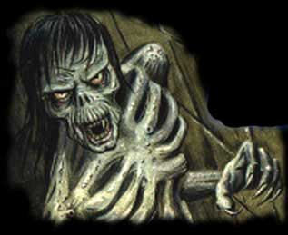

Notizie Generali
La storia di Karan è avvolta nel mistero, secondo la mitologia areliana generalmente riconosciuta tre esseri superiori ascesero al rango di divinità su Arelia. Si trattava di tre fratelli gemelli ossia Eram, Tanatos e Karan. Erano tre bellissimi uomini, Eram aveva una chioma grigia e gli occhi di un colore verde scuro, Karan invece aveva capelli neri e gli occhi scuri come l'ebano e Tanatos aveva una folta chioma bionda e gli occhi di un azzurro chiarissimo. Tanatos dimostrò sin dall'inizio il proprio coraggio e il proprio valore in battaglia ma al tempo stesso la propria volontà di dominio e di imposizione delle proprie idee. Eram ben presto si disinteressò alle faccende terrene attirato dai flutti tempestosi delle infinità marine. Rimase quindi Karan al cospetto del teutonico fratello, dopo poco la tolleranza di Karan agli ordini del fratello finì e costui decise di provare a imporre anche la sua volontà smovendo l'Ordine costituito dal fratello... Tanatos non ammise però alcuna intromissione nel suo operato e dunque si giunse alla lotta. Nella battaglia Karan forse più dotato mentalmente ma meno possente e valoroso ebbe la peggio. Tanatos dunque acquisì tutto il potere che aveva fonte nella Luce e nell'Ordine lasciando Karan senza alcuna fonte di potere divino. A questo punto l'odio di Karan per il fratello iniziò a crescere a dismisura, l'odio avverso l'Ordine... avverso quello che il fratello biondo rappresentava, in pratica l'odio verso la Luce e la Vita stessa. Non potendo acquisire potere dalla luce del piano positivo Karan cercò un'altra fonte di potere più consona alla propria nuova personalità... Di Karan non si ebbero più notizie ma la mitologia racconta che con l'aiuto di mostruose entità, sconosciute su Arelia ma dall'incredibile potenza, con cui Karan strinse un patto divino, il fratello rinnegato acquisì potere dal piano negativo della non-vita, in poche parole dalle tenebre della fine. Quando scoppiò la Guerra degli Dei, un mostruoso titano dalla forza incredibile e inaspettata si schierò fra le file delle Forze Oscure, Karan era ritornato e questa volta per portare su Arelia una sola cosa... la morte !

Descrizioni
raffiguranti la divinità
Karan è un titano, più piccolo in dimensioni di Tanatos, ma ugualmente imponente, indossa sempre una tunica nera come la pece, la sua pelle è bianchissima ed è così scarno che le ossa si intravedono sotto di questa. Al posto della bocca possiede una serie di neri tentacoli che circondano la sua cavità orale che è piena di aculei di colore giallo ed i suoi occhi sono dei globi neri come il vuoto senza fine.
Semi-dei
SEMI-DEI
Minori
SPETTRI OSCURI

Il percorso della morte
Esistono due strade che possono percorrere coloro che decidono di divenire chierici di Karan, la scelta fra queste due diverse strade è strettamente personale e viene effettuata una volta raggiunto il 5° livello di esperienza. Le strade sono :
La Via dell'Oblio
Coloro che seguono questa strada sono comuni chierici di Karan, hanno abbracciato cioè la fede di questa divinità oscura con tutte le conseguenze che ne derivano ma una volta raggiunto il 5° livello hanno scelto di non accettare il dono dell'immortalità che Karan potrebbe dargli. I chierici che hanno scelto questo sentiero hanno accesso a tutti gli incantesimi della divinità e ai poteri speciali comuni, non hanno però i poteri e le limitazioni addizionali che spettano a coloro hanno scelto di seguire l'altro cammino. Paradossalmente i chierici di Karan che scelgono questo sentiero non sono molti e, solitamente, sono meno potenti degli altri. Anche questi chierici vengono cercati dai difensori della Fratellanza della Luce sebbene mostrino minori segni di corruzione malefica. I chierici di Karan con allineamento chaotic neutral sono soliti scegliere questo percorso, costoro sono considerati squilibrati o maniaci. In realtà può trattarsi di intellettuali affascinati dalla non-vita e dal piano negativo e ammaliati dal potere della divinità. Uno dei più potenti chierici di Karan che storicamente fu attestato abbia scelto la Via dell'Oblio e di cui si ha documentazione fu Azorn Kleius, esimio chirurgo della città di Pergar. Costui veniva denominato il "dottor morte" in quanto si scoprì che nel suo "ambulatorio", dove svolgeva operazioni chirurgiche gratuite per i "comuni", effettuava trapianti, espianti e operazioni illegali e decideva arbitrariamente di togliere la vita o curare chi ci si recava indipendentemente dalle effettive possibilità di guarigione dei pazienti. Si scoprì inoltre che tutto lo staff medico era formato da Seguaci della Morte e che nelle cantine si effettuavano esperimenti sulla non-vita che consistevano nell'applicazione chirurgica di organi non-viventi su persone ancora in vita e viceversa. La figura di Azorn Kleius può essere presa ad esempio come una più o meno fedele rappresentazione di cosa può voler dire intraprendere la Via dell'Oblio.
Il Sentiero della Non-Vita
Coloro che intraprendono questo sentiero sono considerati fra i più pericolosi nemici della Fratellanza della Luce e i nemici pubblici dei Tanatiani. Una volta giunti al 5° livello di esperienza costoro decidono di accettare il dono della non-vita di Karan. Accettare questo dono, simbolo dell'incredibile potenza dio Karan, conduce alla morte nella speranza di risorgere come potenti creature non-morte. La follia di una scelta che conduce alla morte lascia intendere quale pressione mentale esercitano gli impulsi negativi di Karan nelle menti di coloro abbiano deciso di ospitarli.
Una volta raggiunto il 5° livello coloro che desiderano seguire queste sentiero devono sottoporsi a un arcano rito clericale. Si noti che non è possibile sottoporsi a questo rito una volta superato il 5° livello di esperienza, ciò si spiega in quanto Karan non regalerà più il suo dono a coloro che si siano dimostrati incerti e non lo abbiano messo al primo posto nelle loro scelte. Il macabro rito consiste in una cerimonia notturna che deve svolgersi in un luogo destinato alla sepoltura di cadaveri. Durante questo rito il chierico di Karan deve volontariamente cibarsi da un teschio della propria razza svuotato e utilizzato come sorta di coppa di un impasto di cervello freschissimo (parte del rito consiste nell'asportazione dai viventi e preparazione di tale macabro ingrediente) proveniente da tre creature di cui una di razza umana e le altre appartenenti a due diverse razze semi-umane. Effettuato il rito il sentiero della Non-Vita è stato irreversibilmente intrapreso e non si conoscono alcune magie o cure in grado di interromperlo.
Il passaggio al nuovo stadio non è però immediato, ma richiedete tempo e soprattutto esperienza. L'evoluzione del chierico segue infatti il crescere del suo potere aumentando di livello in livello fino al 9° livello di esperienza. I passaggi possono essere così sintetizzati :
5° livello di esperienza (dal giorno dopo il rito) : Il colorito del chierico si perde man mano, costui diventa sempre più pallido.
6° livello di esperienza : La figura del chierico diviene più esile e più scarna, si intravedono le ossa sotto la pelle specie il costato e le tempie.
7° livello di esperienza : La pupilla scompare lasciando l'occhio interamente bianco. Il contatto con acqua santa della Fratellanza della Luce provoca ustioni e abrasioni gravi come prodotte da acido (2-8 danni per il contatto con il contenuto di una fiaschetta).
8° livello di esperienza : Piaghe putrescenti appaiono sparse sul copro del chierico provocandogli molto dolore, tutti gli incantesimi di energia positiva che sono in grado di danneggiare i non-morti ora feriscono anche il chierico.
9° livello di esperienza : Appena dopo aver acquisito le conoscenze di tale livello il fisico stravolto del chierico crolla, in spasmi estremo dolore il chierico muore, ma non è la fine... è solo l'inizio ! Il chierico si animerà come Undead Lord of Karan (vedi mostruario) e potrà continuare per l'eternità a portare il male nel primo piano dimensionale.

Obblighi dei priest
Da quando un chierico di Karan raggiunge il secondo livello di esperienza deve possedere nell'ultimo giorno dell'anno (XIII Croon) 11 punti morte + 2 per livello di esperienza da donare alla sua divinità, se non ha a disposizione questi punti perderà gli incantesimi ed i poteri speciali fino a che non avrà donato un ammontare pari al doppio dei punti morte mancanti, questi saranno donati appena guadagnati senza che quindi il chierico potrà accumularli per farne altri utilizzi. Dal giorno successivo a quello nel quale avrà saldato il suo "debito" di morte otterrà nuovamente i suoi poteri ed incantesimi. Se, paradossalmente, passano più anni senza che il chierico paghi il suo debito in punti oscuri, i punti richiesti ogni anno si accumuleranno (e saranno sempre raddoppiati).
Per una descrizione dettagliata dei punti morte e di come ottenerli cliccare sul link "Rituali" in fondo alla pagina.
Simboli fondamentali del culto
Medaglione
circolare di 15 cm. di diametro interamente nero a simboleggiare il legame con
il piano negativo con incastonate ossa umane e semi-umane (Simbolo
sacro)
La lama del male : si tratta di un grosso rasoio rituale estremamente affilato, non utilizzato per combattere me per recidere le carni delle vittime sacrificali, sulla lama sono tipicamente incise figure di non morti, principalmente scheletri.
Schema di gioco
Allineamento
Divinità: Chaotic Evil
Chierici: Qualsiasi Evil e Chaotic Neutral
Seguaci:
Qualsiasi Evil o Neutral
Abilità
minime richieste
Saggezza
10 ( con 16 o + = + 10 % Xp )
Razze
permesse
Nessuna
limitazione ma principalmente umani.
NonWeapon
Proficiencies (priest, general)
Required = Religion, Undead Lore
Raccomandate
= Morticianship, Necrology, Undead Control, Power Prayer, Last Turning, Anatomy,
Necrology, Netherworld Knowledge, Spirit Lore.
Weapon
Proficiencies
Required
= Nessuna
Armi
e armature permesse
Armature:
Nessuna
Scudi: Nessuno
Pugnali: Bone Dagger, Khanjar, Jambiya Altre Armi: War Scythe
Poteri Speciali
Momento di flusso dell'energia divina: Il momento utilizzato da Karan è la mezzanotte (ore 0.00).
Conoscenze
Arcane : Tutti i chierici di Karan possono
imparare le seguenti competenze come se fossero della propria classe, senza
pagare quindi punti e slot addizionali:
Anatomy
(2 slots, Intelligenza, -2), Wizards, [Spell & Magic]
Necrology
(1 slots, Saggezza, 0), Wizards, [Necromantic Handbook]
Netherworld Knowledge
(1 slots, Saggezza, -3), Wizards, [Necromantic Handbook]
Spirt Lore
(2 slots, Carsima, -4), Wizards, [Necromantic Handbook]
Il Fascino Negativo : Tutti i chierici di Karan hanno uno speciale potere sui non morti. In base a tale potere nessun non morto attaccherà volontariamente un chierico di Karan anche qualora questo sia ancora in vita, ad esempio un chierico di Karan può passeggiare tranquillamente in un cimitero pieno di zombies. A questo principio vigono alcune eccezioni :
1) I non-morti intelligenti che si sentano minacciati dal chierico di Karan nei loro interessi possono decidere di eliminare il chierico
2) I non-morti controllati a cui è stato ordinato di attaccare il chierico rispetteranno il loro comando (ad es. se il chierico di Karan entra in una cripta con zombies ai quali è stato ordinato di attaccre chiunque vi si rechi, costui verrà attaccato).
3) Alcuni rarissimi non morti di allineamento good non sono condizionati dal fascino che il chierico della non vita ha sui non morti.
4) I non morti sui quali è stato effettuato un tentativo di dominio non sono più sottoposti al fascino negativo.
Dominare i Non-Morti : Oltre ad avere il Fascino Negativo, i chierici di Karan possono provare a dominare i non-morti che incontrano (facendo però venire meno il loro fascino sugli stessi) secondo le regole del Dominare i Non Morti (link). Dato il loro collegamento con la non-vita, i chierici di Karan ottengono dei benefici rispetto alle normali regole ed in particolare :
1) Nella tabella di domino al risultato di "oltre 20" va aggiunta la possibilità di scelta dell'effetto Permanent Domination. Qualora il priest non scelga questa opzione dovrà utilizzare però le altre che sono previste dalla tabella senza maggiorazioni nella loro durata.
2) Gli undead sottoposti a "Permanent Domination" da parte di un chierico di Karan vedono rafforzare il loro legame con il primo piano materiale. Il chierico di Karan costituirà, infatti, per la creatura controllata una sorta di "ancora" in questo piano dimensionale, il risultato di questo nuovo legame diretto con la divinità della morte è che tali creature non sono più soggette allo scaccio da parte dei chierici delle altre divinità fino a che restano sotto dominio permanente del chierico di Karan. Le creature soggette a tale dominio sono riconoscibili per il bagliore dai riflessi verdi che permane nei loro occhi per tutta la durata del dominio. Si noti che questo beneficio lo ottengono solo le creature sotto "Permanent Domination" e non quelle dominate in altro modo. Il beneficio cessa istantaneamente alla morte del chierico di Karan che dominava questi non-morti.
Si noti che i chierici di Karan hanno la possibilità di creare creature non morte, nei casi in cui tali creature si trovino già sotto il suo comando potrà estendere (rispettando il limite dei dadi vita) il suo Permanent Domination (per renderle non scacciabili) su costoro, automaticamente e senza che sia necessario alcun tiro. Nel momento in cui le libererà, queste creature torneranno sotto il suo normale controllo.
Al 9° livello ; Il Dono delle Tenebre : Una volta raggiunto il 9° livello i chierici di Karan sono in grado di effettuare un tenebroso e potentissimo rituale negromantico attraverso il quale possono donare l'immortalità della non-vita ai loro migliori fedeli,alleati, amici o a coloro ne facciano richiesta e siano in grado di sdebitarsi con il chierico. Possono essere sottoposti a tale rito solo coloro appartengono a una classe di personaggio e hanno raggiunto almeno il terzo livello di esperienza. Coloro sono meno esperti e forti non sarebbero in grado di superare il rituale. Il rituale si compie facendo alloggiare il prescelto, che sia stato denudato e cosparso di escrementi vari, nella Cassa Oscura (si tratta di una cassa da morto interamente costruita in ebano nero con ricche incisioni rituali inneggianti a Karan e con scolpite orrende creature delle tenebre, l'interno è in lastre di bronzo e pelli di animali scuoiati vivi, il costo di questa cassa si aggira intorno alle 3500 corone ma può essere utilizzata per più di uno di questi riti) tale cassa viene poi chiusa e lasciata per 1 giorno nel luogo sacro circondata da un numero di candele nere rituali pari al livello di esperienza del prescelto (tali candele sono costruite con pelle umana e cere speciali e hanno un costo di 500 corone l'una). Quando il giorno seguente le candele si saranno consumate la cassa verrà interrata in un luogo adibito a cimitero (con la creatura al suo interno ancora viva) ad almeno 2 metri di profondità. Il prescelto dunque morirà asfissiato nella cassa che dovrà restare sepolta per almeno 1 mese al termine del quale potrà essere recuperata (durante la notte) e aperta. Durante questa notte il chierico di Karan ultimerà il rito e verserà sul cadavere una boccetta di acqua santa della Fratellanza della Luce. Il contatto di quest'acqua con il cadavere scatenerà una reazione che permetterà di rianimarlo. La possibilità che il cadavere si rianimi è pari al 50 % + 1% per livello del prescelto. Se il tiro ha successo la creatura sarà rinata (dotata di propria autonoma volontà e non sotto il controllo del chierico) come non morta, incarnando un Prescelto delle Tenebre (vedi mostruario), altrimenti il suo corpo a contatto don l'acqua santa prenderà combustione e ne resterà solo cenere. Un chierico di Karan può eseguire uno solo di questi rituali l'anno, inoltre possono essere sottoposti a tale rituale solo creature che lo abbiano accettato volontariamente (altrimenti moriranno e nella bara e non succederà nulla). Per tutti i riferimenti di ruolo i Prescelti delle Tenebre devono essere considerati come paladini di Karan. I chierici di Karan e i chierici e i paladini della altre divinità non possono farsi sottoporre volontariamente a questo malefico rituale.

Incantesimi
Gli incantesimi concessi da Karan riguardano tutti l'energia negativa, in particolare afferiscono ai non morti (creazione, controllo, potenziamento) e producono danni sulle creature che basano la loro esistenza sull'energia positiva.
Si noti che molte magie di Karan funzionano solo su esseri non-morti. Queste magie, dunque non funzionano su chierici e sui fedeli di Karan che siano ancora viventi. Costoro, infatti, mantengono ancora uno stretto legame con il primo piano materiale positivo che rappresenta ciò che è odiato dalla divinità. Queste magie, invece, funzionano perfettamente sugli Undead Lords of Karan e sui Prescelti delle Tenebre. Quanto alla razza speciale Adept of Darkness deve osservarsi che si tratta di una razza concepita come semi non-morta, tuttavia, essendo nella descrizione specificato che "predominano i geni normali" e che "si tratta ancora di un essere vivente che cresce e ha un metabolismo comune", deve ritenersi che non funzionano su costoro le magie di Karan che hanno effetto solo sui non-morti. Qualora, invece, gli appartenenti a questa razza muoiano e si animino utilizzando il loro potere "risveglio negativo", costoro otterranno tutti i benefici dei non-morti.
Incantesimi generali
(Player's Handbook,Tome of Magic,Spell and Magic,Necromancers)
1° livello
|
Detect Magic |
|
|
|
Battlefate* |
|
Cause Fear |
|
Darkness |
|
Cause Light Wounds |
|
Portection from Good |
|
Call Upon Faith |
|
Sanctuary* |
|
Ebony Hand |
|
Skeletal Servant |
| Spectral Sense |
| Undead Alacrity |
Note esplicative agli spells del 1° livello:
Battlefate lanciato dai chierici di Karan funziona solo su creature undead.
Sanctuary protegge i chierici di Karan solo nei cimiteri o luoghi assimilabili.
2° livello
|
Obscurement |
|
Silence 15' radius |
|
|
|
Dissession's Feast |
|
Hesitation |
|
Chaos Ward* |
|
Defile |
|
Hear Heartbeat |
|
Resist Turning |
Note esplicative agli spells del 2° livello:
Chaos Ward lanciato dai chierici di Karan funziona solo su creature undead.
3° livello
|
Dispel Magic |
|
Miscast Magic |
|
|
|
Continual Darkness |
|
Cause Blindness & Deafness |
|
Cause Disease |
|
Animate Dead |
|
Feign Death |
| Protection from Good 10' radius |
|
Magical Vestment |
|
Bestow Curse |
|
Life Drain |
|
Spirit Bind/Spirit Release |
4° livello
|
Focus |
|
Uplift |
|
|
|
Cause Serious Wounds |
|
Chaotic Combat* |
|
Inverted Ethics |
|
Cause Insanity |
|
Heart Blight |
| Suspended Animation |
| Plague Curse |
Note esplicative agli spells del 4° livello:
Chaotic Combat lanciato dai chierici di Karan funziona solo sui guerrieri undead.
5° livello
|
Cause Critical Wounds |
|
Dispel Good |
|
|
|
Slay Living |
|
Chaotic Command |
|
Mindshatter |
|
Undead Spell Focus |
| Scourge |
Incantesimi speciali (Unici della divinità)
1° livello
|
Animate Body |
||||||||||||
|
Black
Tentacle |
||||||||||||
| Soul Extirpation | ||||||||||||
|
2° livello
3° livello
4° livello
|